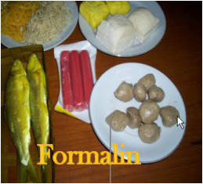

Salah satu sumber energi yang dimanfaatkan oleh manusia diperoleh dari makanan. Untuk itu, makanan yang kita konsumsi haruslah makanan yang sehat.
Perhatikan piramida makanan berikut!
Gizi seimbang adalah keseimbangan antara zat-zat penting yang terkandung di dalam
makanan maupun minuman yang dikonsumsi oleh seseorang dalam kehidupan sehari-
hari. Setiap orang harus makan makanan dan minum minuman yang mengandung
tiga zat gizi utama yang cukup jumlahnya, baik zat tenaga, zat pembangun maupun
zat pengatur. Tidak seimbang ataupun kurang asupan gizi akan dapat memengaruhi
kesehatan tubuh seseorang.
Kelompokkan makanan yang kamu dan temanmu bawa berdasarkan piramida
makanan di atas!
Di kelompok manakah makanan yang kamu bawa?
Susunlah menu makan siang kesukaanmu dan sajikanlah dalam tampilan yang menarik dengan memberikan gambar untuk masing-masing jenis makanan. Berikan nama di setiap jenis makanan untuk menjelaskan zat yang terkandung di dalamnya.
Bandingkanlah menu makananmu dengan menu makanan teman-temanmu, dan buatlah kesimpulan dengan melihat persamaan dan perbedaan antara menu makananmu dengan menu temanmu.
Banyak sekali makanan yang dijual di sekitar lingkungan tempat tinggal kita. Apakah
kamu tahu bahwa semua makanan tersebut baik untuk tubuhmu? Makanan apa yang
tidak baik untuk tubuhmu? Yuk, kita cari dari teks bacaan berikut!
|
Makanan berpengawet adalah makanan yang mengandung bahan-bahan yang terbuat dari bahan tekstil, vetsin, bahkan ada yang terbuat dari formalin. Formalin dan boraks adalah zat kimia yang digunakan untuk mematikan bakteri sehingga banyak dipakai sebagai pengawet. Makanan berpengawet dapat kita jumpai di mana saja, contohnya, mi instan, makanan-makanan ringan, sosis, dan bakso dan lain-lain. Makanan berpengawet sangat berpengaruh pada kesehatan kita. |
 |
Jika makanan berpengawet dikonsumsi terus-manerus akan mengakibatkan kerusakan pada sistem pernafasan. Selain itu, akan mengakibatkan berbagai macam penyakit, seperti kanker hati dan kanker paru-paru,dan lain-lain.Maka dari itu, hati-hatilah dalam memilih makanan yang baik untukmu.
Makanan yang kalian makan akan diolah oleh tubuh sehingga menghasilkan energi untuk melakukan kegiatan sehari-hari. Oleh karena itu makanan merupakan salah satu sumber energi yang disebut energi kimiawi. Energi juga sangat berkaitan dengan panas yang dihantarkannya. Nah, lakukan percobaan ini untuk mengetahui sifat hantaran panas/kalor